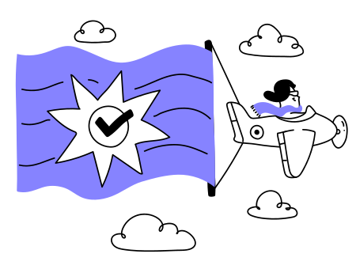
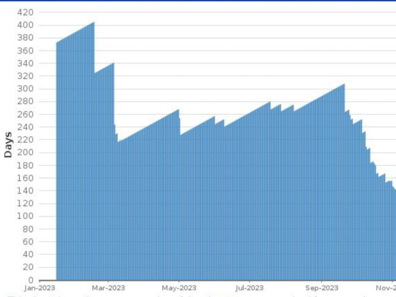
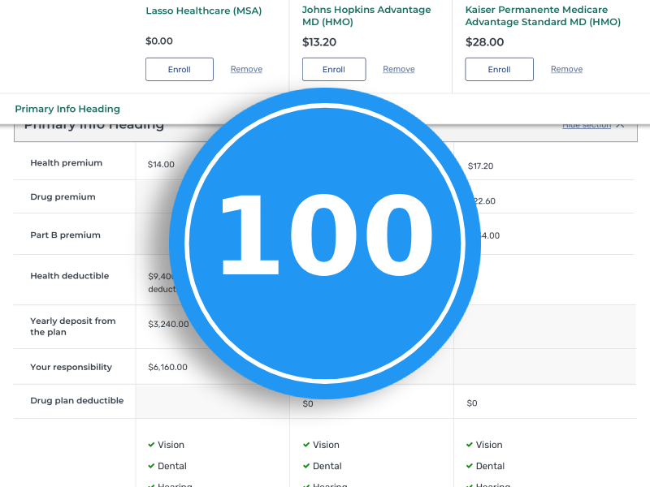
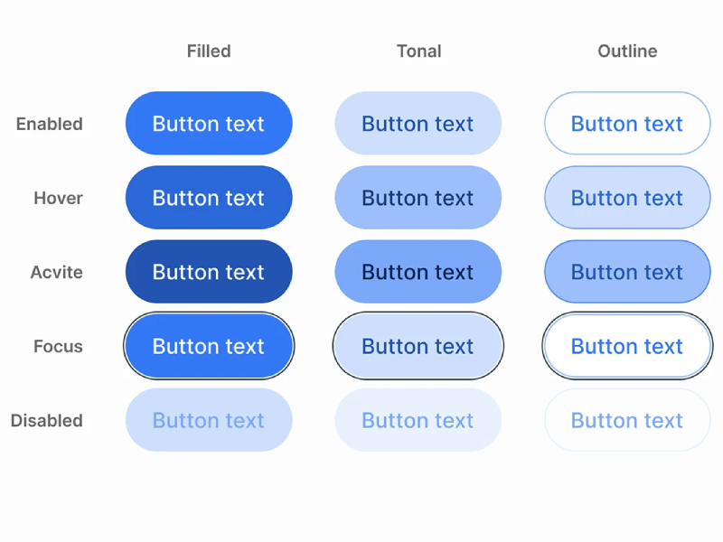
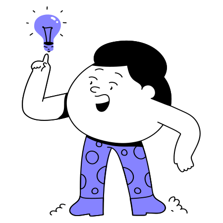

Accessibility that scales with your product.
I help high-growth teams bake inclusion into their infrastructure through accessibility design annotations, manual auditing, and code-level remediation. Most recently, I’ve architected inclusive user experiences and handoff systems at T-Mobile, Healthcare.gov, and Medicare.gov.
Proven Results

Established a 'Shift-Left' accessibility program across multiple delivery teams, reducing remediation time by 50% on the Healthcare.gov team.
Led the testing, documentation, and remediation issues for a relaunch of Medicare.gov that resulted in the first-ever perfect testing score for a .gov application when reviewed by the Section 508 Office at CMS/HHS.


Architected a scalable design system from the ground up, reducing time-to-ship for accessible code by 25% through standardized component logic and deterministic documentation.
Strategic Services

Accessible Design
Design Reviews & Annotations: I provide the 'Source of Truth' for your UI. I build accessibility annotation kits and perform design reviews that eliminate developer guesswork.
Testing & Code Remediation
Manual Auditing & Code Remediation: Deep-dive testing for Web and Native Mobile apps, providing actionable audit reports with specific ARIA and semantic HTML remediation logic for your engineers.
View testing and remediation code examples on CodepenEducation & Training
Providing foundational and technical deep dive training sessions for any and all roles. Workshops designed to unblock your team's specific a11y hurdles.
I've led trainings for groups such as AIGA Los AngelesA decade of accessibility at the scale of government and enterprise.
I’ve spent the last decade navigating the complexity of federal government systems and massive enterprise design libraries. I’ve learned that accessibility shouldn’t be a 'final audit', it should be a foundational part of your infrastructure. From leading the relaunch of Medicare.gov to scaling mobile annotation kits at T-Mobile, I help companies 'Shift-Left' so they can launch faster, stay compliant, and reach every user.